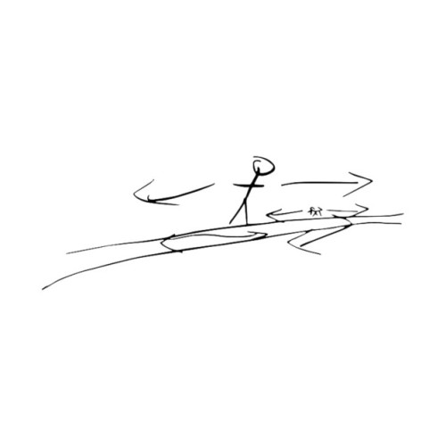
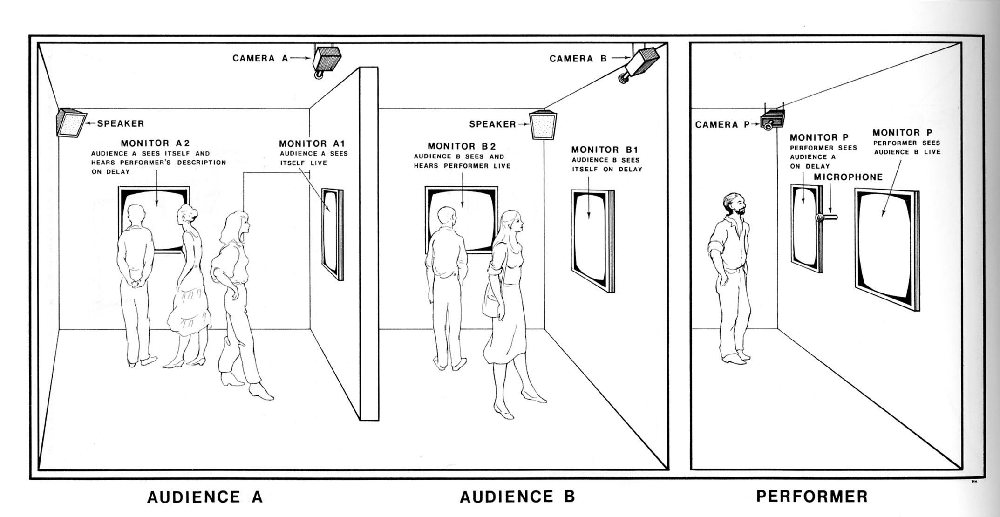

1. I misremembered a Calvin + Hobbes strip where Calvin's Mom tells him "If you keep making that face when the wind changes, it'll stick like that"
Misremembering this, I imagined Calvin practicing outside, waiting for the wind to change - finally, it does! Yet his face returns to normal. He says "Rats!"

2. In "Stranger Things" - that netflix show - Mr. Clarke, a science teacher, explains string theory using a metaphor about a flea and a acrobat. The acrobat can only move in 1 dimension, whereas the flea can move in 2. Because the flea is much smaller, it's 2 dimensions are wrapped around the acrobat's 1. It's linear movement in 2 dimensions loops around the 1st dimension, producing a 3rd.
Recently, at a reading group, a friend noted how the texts we were discussing repeatedly made reference to a Horizon - meaning a space in between - suggesting that a person or a group could occupy this space. Living within a Horizon, we thought, would allow a person or a group to evade binaries and designations.

Misremembering the Calvin + Hobbes strip, I thought of a fragment of conversation - "You never really see the back of your head. There are parts of you that you can't know about. They constitute you, act on your behalf but your relationship to them is backward, inside-out. You cast them like a shadow."
Practical Application
The flea's Horizon is the Horizon of the Horizon
Look at the Horizon, - looking in a loop - you see the back of your head
Pull a face out of the back of your head
The face pulled out of the back of your head sticks in the Horizon